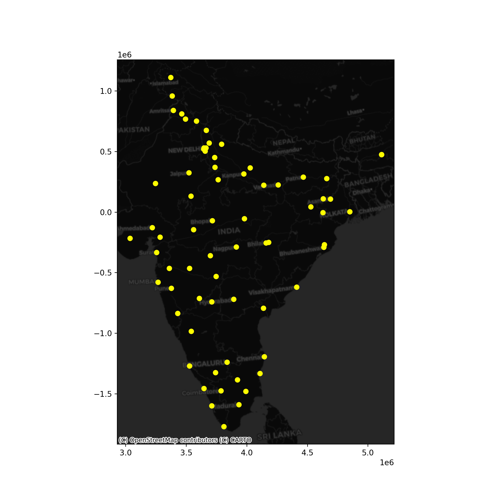

library(sf)
library(leaflet)
library(tmap)
library(geojsonsf)
library(dplyr)Do-It-Yourself
import pandas as pd
import geopandas as gpd
import contextily as cx/Users/pietrost/.virtualenvs/r-reticulate/lib/python3.9/site-packages/urllib3/__init__.py:35: NotOpenSSLWarning: urllib3 v2 only supports OpenSSL 1.1.1+, currently the 'ssl' module is compiled with 'LibreSSL 2.8.3'. See: https://github.com/urllib3/urllib3/issues/3020
warnings.warn(import matplotlib.pyplot as pltTask I: Photographs in Tokyo
In this task, you will explore patterns in the distribution of the location of photos. We are going to dip our toes in the lake of point data by looking at a sample of geo-referenced photographs in Tokyo. The dataset comes from the GDS Python Book and contains photographs voluntarily uploaded to the Flickr service.
Photos
# Read the CSV file into a data frame
tokyo <- read.csv("https://geographicdata.science/book/_downloads/7fb86b605af15b3c9cbd9bfcbead23e9/tokyo_clean.csv")# Read the CSV file into a data frame
tokyo = pd.read_csv("https://geographicdata.science/book/_downloads/7fb86b605af15b3c9cbd9bfcbead23e9/tokyo_clean.csv")
tokyo.info()<class 'pandas.core.frame.DataFrame'>
RangeIndex: 10000 entries, 0 to 9999
Data columns (total 7 columns):
# Column Non-Null Count Dtype
--- ------ -------------- -----
0 user_id 10000 non-null object
1 longitude 10000 non-null float64
2 latitude 10000 non-null float64
3 date_taken 10000 non-null object
4 photo/video_page_url 10000 non-null object
5 x 10000 non-null float64
6 y 10000 non-null float64
dtypes: float64(4), object(3)
memory usage: 547.0+ KBAdministrative areas
url <- "https://darribas.org/gds_course/content/data/tokyo_admin_boundaries.geojson"
tokyo_areas <- sf::st_read(url) # importReading layer `tokyo_admin_boundaries' from data source
`https://darribas.org/gds_course/content/data/tokyo_admin_boundaries.geojson'
using driver `GeoJSON'
Simple feature collection with 39 features and 5 fields
Geometry type: MULTIPOLYGON
Dimension: XY
Bounding box: xmin: 139.4559 ymin: 35.3127 xmax: 140.014 ymax: 35.89112
Geodetic CRS: WGS 84tokyo = gpd.read_file("https://darribas.org/gds_course/content/data/tokyo_admin_boundaries.geojson") # import
# Display the first few rows of the GeoDataFrame
print(tokyo.head()) GID_1 ... geometry
0 JPN.4_1 ... MULTIPOLYGON (((139.97650 35.68272, 139.97583 ...
1 JPN.4_1 ... MULTIPOLYGON (((139.97223 35.76775, 139.97018 ...
2 JPN.19_1 ... MULTIPOLYGON (((139.74057 35.54160, 139.74110 ...
3 JPN.19_1 ... MULTIPOLYGON (((139.62944 35.40111, 139.62917 ...
4 JPN.35_1 ... MULTIPOLYGON (((139.62227 35.81256, 139.62088 ...
[5 rows x 6 columns]With these at hand, get to work with the following challenges:
Create a Hex binning map of the photos
Compute and display a kernel density estimate (KDE) of the distribution of the photos
Using the area layer:
Obtain a count of property by area (no the the area name is present in the property table)
Create a raw count choropleth
Create a choropleth of the density of properties by polygon
Task II: Clusters of Indian cities
For this one, we are going to use a dataset on the location of populated places in India provided by http://geojson.xyz. The original table covers the entire world so, to get it ready for you to work on it, we need to prepare it:
url <- "https://d2ad6b4ur7yvpq.cloudfront.net/naturalearth-3.3.0/ne_50m_populated_places_simple.geojson"
data <- sf::st_read(url) # importReading layer `ne_50m_populated_places_simple' from data source
`https://d2ad6b4ur7yvpq.cloudfront.net/naturalearth-3.3.0/ne_50m_populated_places_simple.geojson'
using driver `GeoJSON'
Simple feature collection with 1249 features and 36 fields
Geometry type: POINT
Dimension: XY
Bounding box: xmin: -175.2206 ymin: -90 xmax: 179.2166 ymax: 78.21668
Geodetic CRS: WGS 84data <- st_make_valid(data)
plot(data$geometry) # plot to check all is well
url_popplaces = (
"https://d2ad6b4ur7yvpq.cloudfront.net/naturalearth-3.3.0/"
"ne_50m_populated_places_simple.geojson"
)
url_popplaces'https://d2ad6b4ur7yvpq.cloudfront.net/naturalearth-3.3.0/ne_50m_populated_places_simple.geojson'Note the code cell above requires internet connectivity.
places <- data %>%
filter(adm0name == "India")places = gpd.read_file("https://d2ad6b4ur7yvpq.cloudfront.net/naturalearth-3.3.0/"
"ne_50m_populated_places_simple.geojson").query("adm0name == 'India'")By default, place locations come expressed in longitude and latitude. Because you will be working with distances, it makes sense to convert the table into a system expressed in metres. For India, this can be the “Kalianpur 1975 / India zone I” (EPSG:24378) projection.
places_m <- st_transform(places, crs = 24378)places_m = places.to_crs(epsg=24378)This is what we have to work with then:
tmap_mode("view")tmap mode set to interactive viewingtm_shape(places_m) + tm_bubbles(size = "pop_max", col = "yellow")+
tm_tiles("Stamen.TonerLabels")Warning: basemap Stamen.TonerLabelsdoes not exist in the providers list nor
does it seem a valid urlLegend for symbol sizes not available in view mode.ax = places_m.plot(
color="xkcd:bright yellow", figsize=(9, 9)
)
cx.add_basemap(
ax,
crs=places_m.crs,
source=cx.providers.CartoDB.DarkMatter
)
plt.show()
With this at hand, get to work:
Use the DBSCAN algorithm to identify clusters
Start with the following parameters: at least five cities for a cluster (min_samples) and a maximum of 1,000Km (eps)
Obtain the clusters and plot them on a map. Does it pick up any interesting pattern?
Based on the results above, tweak the values of both parameters to find a cluster of southern cities, and another one of cities in the North around New Dehli